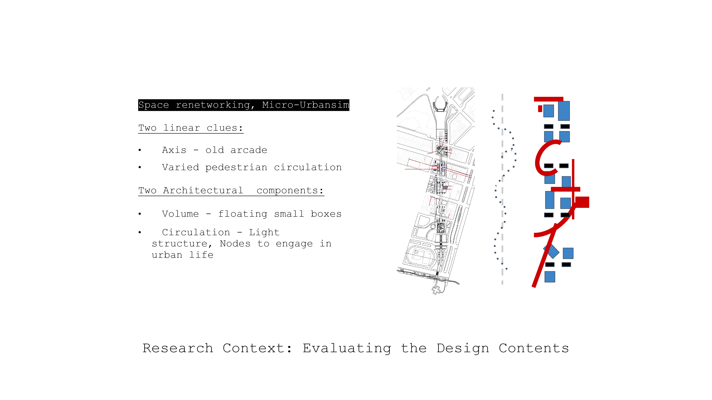

|
Vote for your space -Gamified Method for Participatory Design in Urban Renewal- Yufei Chen
Final project for the MIT class
4.550/4.570
Computation Design Lab |
|
|
Gamified Method for Participatory Design in Urban Renewal Illustration by Yufei Chen |
|
Project Overview
This study examines how gamified assessment can be used as a tool for testing design effectiveness in participatory design for urban renewal.
|
||
|  |
Fig 1. Gamified Methods for evaluating Urban renewal The test case: a renewal project under Manhattan Bridge – programs are relocated and new retail and entertain modules are induced. |
|
Fig 2. Overall Gamified Process Three stages: game background construction, gameplay lifecycle and getting data from game for analysis. |
|
|
Fig 3. Game System: Events The event system is the core gameplay, which has two types: consumption events to gain item and consume resources, the restoration events to restore resources and gain collection; after the first time of experiencing one events, new dialogue branch will be unlocked for further evaluation and text feedback. |
|
|
Fig 4. Data Recorded Three types of data will be extracted for analysis: trace record during gameplay, the selection record player make and the comments player put inside the game. After & before game questionnaire will also help to reduce the noise. |
|
Limitations It is difficult to extract a single linear evaluation criterion from the complex variables in urban design. Besides, the game experience itself has a certain inducement to the user's likes and dislikes. |
|
Future Development
1) Reduce the proportion of quality evaluation content, and focus more on the acquisition and judgment of direct data.
|
2013 All rights reserved. Last modified: Jan. 30, 2014 by TN